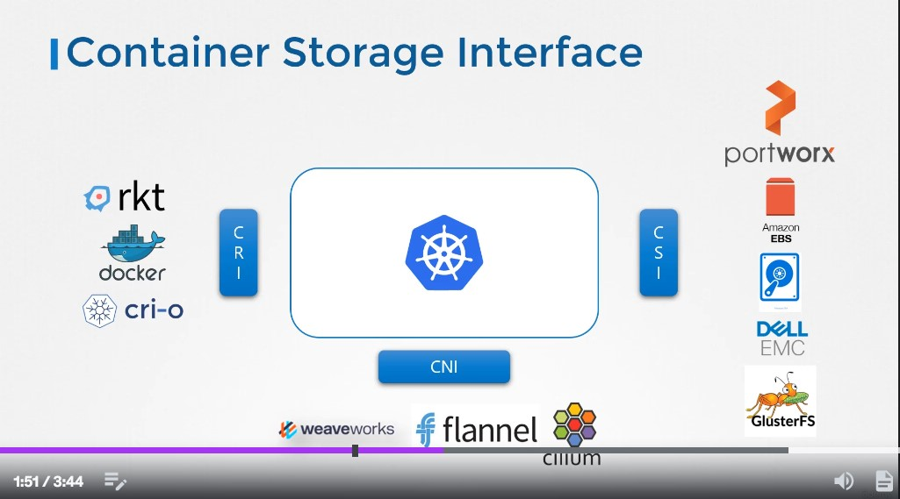
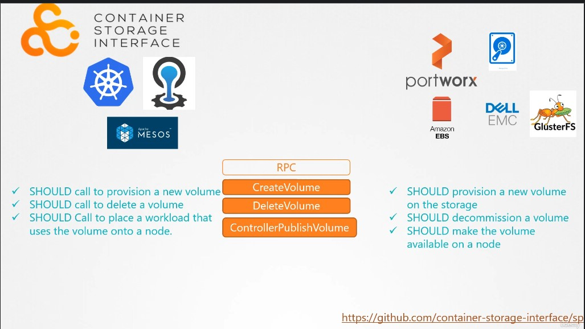

CKA_Note_Section_8_Storage
Contents
169. Storage in Docker
這個章節主要在講 Docker container image/volume 的概念，可以參考我之前打的兩篇文章:
171. Container Storage Interface (CSI)
關於 CRI 的介紹非常推薦 Hwchiu 鐵人賽系列: [Day5] Kubernetes & CRI (Container Runtime Interface)(I)

▲ Kubernetes 只是把各種界接定義出來，例如: CRI, CSI, CNI
問問筆記@Hiskio - Kubernetes
Q: 大家早安，請問 Kubernetes 是不是沒有定義出 CSI 的標準，而是提供開發套件給各廠家而已? 不像 CRI, CNI 有定義出標準這樣。
A: CSI 也有標準，GitHub 可以翻一下，還是有一個 interface 存在。
因此講師說 “CSI in NOT a Kubernetes specific standard” 敘述有錯，我想他應該是要表達各個 solution 都有自己的 driver 吧!

▲ CSI 要做的事情就是接收 K8s 的 RPC call 並完成指定任務。
174. Persistent Volumes
請參考 CKAD Note Section 8 State Persistence#106. Persistent Volumes
175. Persistent Volume Claims
請參考 CKAD Note Section 8 State Persistence#107. Persistent Volume Claims
181. Storage Class
請參考 CKAD Note Section 8 State Persistence#(CKAD 不考) 112. Storage Classes
Author 老柯
LastMod 2022-07-04